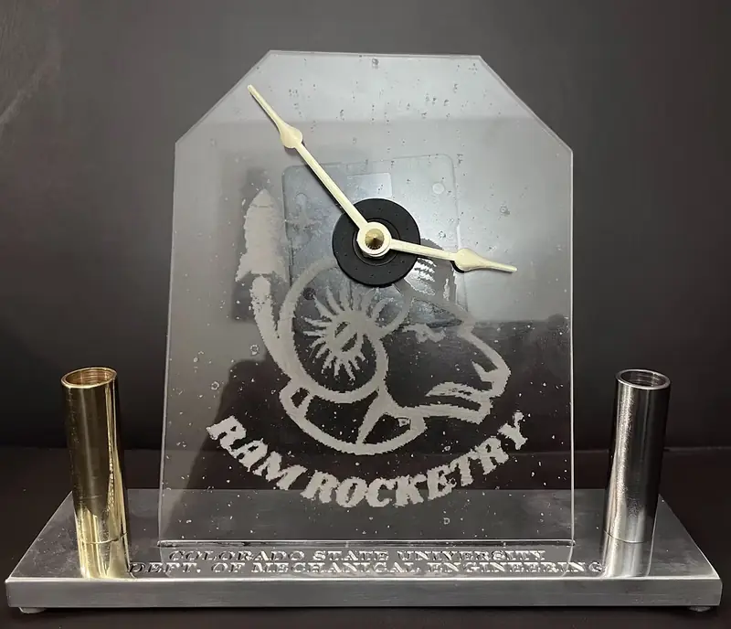

Machined Desk Clock
The longest project in my manufacturing course: a functional clock assembled from an aluminum base, brass and steel pen holders, an acrylic face, and a standard clock mechanism.

- Course
- MECH 200A
- Tracked labor
- 57 hours
- Processes
- Lathe / mill / CNC
- Completion
- Fall 2024
Build
This project required careful tolerance control across several parts rather than one isolated machining operation. The original build combined a machined aluminum base, separate brass and steel pen holders, an acrylic clock face, and the clock mechanism itself.
I used the project as a practical introduction to sequencing work across manual machines and the HAAS CNC mill. Machine availability also mattered: the lathe, manual mill, and CNC mill became increasingly busy as class deadlines approached.
Cost & time
My original estimate tracked 57 total labor hours at a class labor rate of $20 per hour, or $1,140 in labor before material and component costs. The material estimate included brass and steel bar stock for the pen holders, aluminum stock for the clock base, acrylic sheet for the face, and a standard clock mechanism.
The largest time allocations in the original log were the brass pen holder, steel pen holder, and aluminum base. That made the project useful for seeing how manual operations dominate cost when a one-off student process is extrapolated beyond a prototype.
Process improvement
The main improvement I identified was to move repetitive manual work onto CNC equipment. The brass and steel holders could be produced on a CNC lathe, including tapping operations, while the aluminum base could be rough-cut on the horizontal bandsaw and finished on the CNC mill.
The lesson was not simply “use CNC.” It was to reserve manual operations for the steps that actually benefit from them and automate the geometry that is repetitive and well constrained.
What I learned
This was the first major manufacturing project in the course, and the biggest lesson was scheduling. Starting early mattered because machine queues became a real constraint. I also learned to treat TA check-ins and rework as part of the process instead of assuming each part would be correct on the first attempt.
Original class portfolio: Clock project ↗